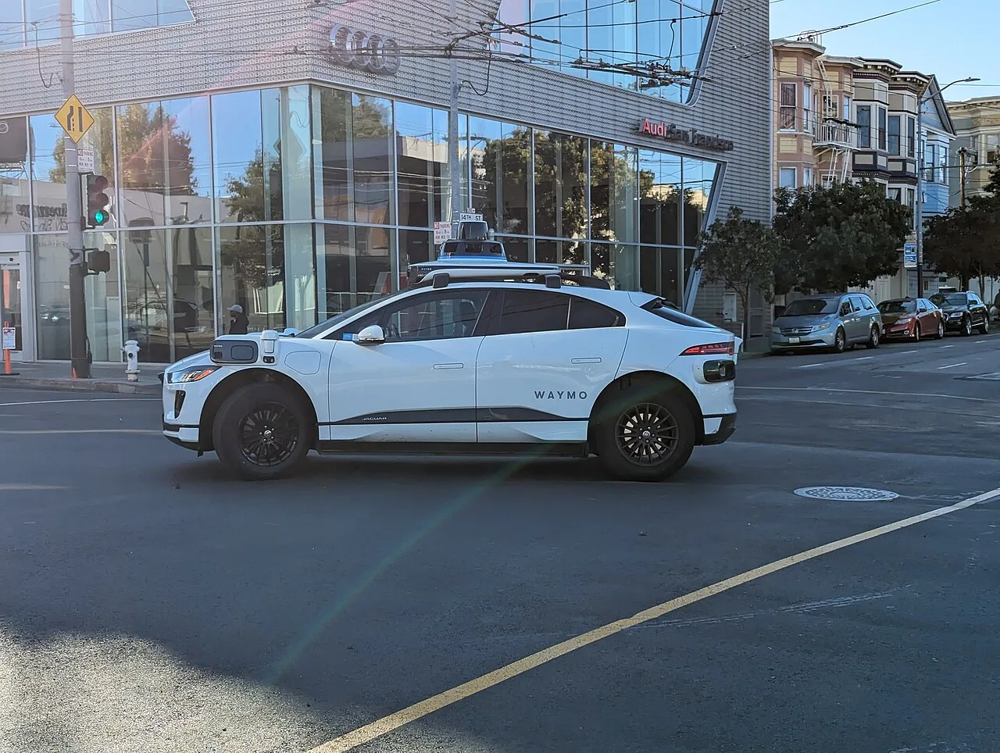
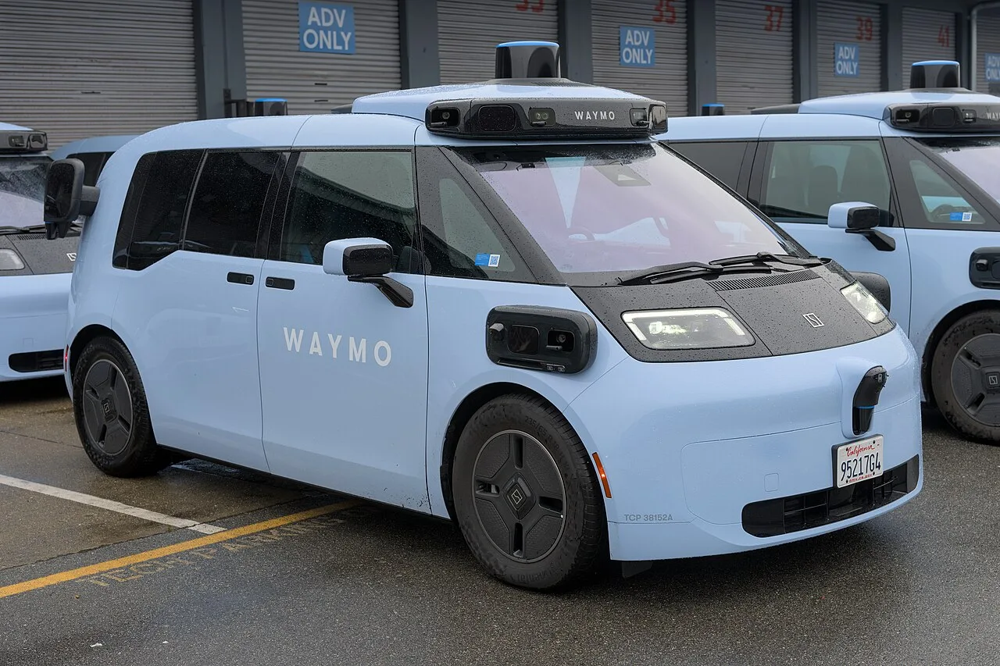

▲ 웨이모의 새 로보택시 '오자이'. 중국 지커가 만들고, 127.5% 관세를 물고 미국에 들어온다
미국은 중국산 전기차에 100%가 넘는 관세를 매겨 사실상 시장 진입을 막아뒀습니다. 그런데 구글 모회사 알파벳 산하의 자율주행 기업 웨이모가 그 관세를 전부 내면서 중국차를 들여오고 있습니다.
3만8,000달러짜리 차가 관세를 붙이면 8만6,500달러가 됩니다. 그런데도 이게 더 싼 선택입니다. 웨이모가 지금까지 써온 차가 대당 20만 달러였기 때문입니다.
1. 계산기를 두들겨보면
숫자를 순서대로 쌓아보면 웨이모의 판단이 보입니다.
| 항목 | 지커 오자이 | 재규어 I-페이스 |
|---|---|---|
| 차량 기본가 | 약 3만8,000달러 | - |
| 관세(127.5%) | +약 4만8,500달러 | |
| 관세 포함 차량가 | 약 8만6,500달러 | |
| 자율주행 패키지 | 약 2만5,000달러 | 포함 |
| 총 대당 비용 | 10만 달러 이상 | 20만 달러 이상 |
관세로 차값이 두 배 넘게 뛰었는데도, 최종 비용은 기존 방식의 절반 수준입니다. 로보택시는 한두 대 사는 게 아니라 수천 대 단위로 굴리는 사업입니다. 대당 10만 달러 차이를 3,200대에 곱하면 3억 달러가 넘습니다.
여기서 드러나는 사실이 하나 있습니다. 중국 전기차의 원가 경쟁력이 127.5% 관세로도 상쇄되지 않는다는 것입니다. 관세는 가격을 두 배로 만들었지만, 출발선의 격차가 그보다 컸습니다.

▲ 웨이모가 그동안 써온 재규어 I-페이스. 대당 20만 달러가 넘는다
2. 왜 재규어는 20만 달러가 됐나
비교 대상인 재규어 I-페이스가 원래 20만 달러짜리 차는 아닙니다. 이 가격은 개조 비용이 쌓인 결과입니다.
로보택시는 완성차를 사서 센서를 붙이면 끝나는 게 아닙니다. 라이다와 카메라, 레이더를 차체 여러 곳에 배치해야 하고, 전원과 통신 배선을 새로 깔아야 하며, 조향·제동을 컴퓨터가 제어할 수 있도록 계통을 이중화해야 합니다. 이 작업을 양산이 끝난 차에 사후적으로 하면 비용이 급등합니다.
게다가 I-페이스는 애초에 로보택시용으로 설계된 차가 아닙니다. 승객 공간과 승하차 동선이 택시 용도에 최적화돼 있지 않습니다. 웨이모가 지커 오자이를 두고 "더 넓은 객실로 승객 수송에 더 적합하다"고 평가한 이유가 여기 있습니다.

▲ 오자이는 처음부터 로보택시 용도를 염두에 두고 설계됐다
3. 처음부터 로보택시로 만든 차
지커 오자이(중국명 CM1e)는 목적기반차량(PBV) 성격의 모델입니다. 개인 소유보다 승객 수송을 전제로 설계됐습니다.
이 차이는 원가에 직결됩니다. 설계 단계부터 센서 장착 위치와 배선 경로를 반영해두면, 나중에 뜯어고칠 일이 없습니다. 실내도 마찬가지입니다. 운전자가 없다는 전제로 공간을 짜면 같은 차체에서 더 넓은 객실이 나옵니다.
한국에서도 비슷한 접근이 진행 중입니다. 기아 PV5가 그 사례로, 개인 구매보다 사업용 수요를 겨냥한 목적기반차량입니다. 최근 전기차 전시회 라인업에도 이름을 올렸습니다.
4. 관세 정책이 만든 역설
이 사안이 흥미로운 이유는 정책 의도와 결과가 어긋난 지점을 보여주기 때문입니다.
중국 전기차에 대한 고율 관세는 자국 산업을 보호하고 중국차의 시장 진입을 막기 위한 조치입니다. 실제로 일반 소비자 시장에서는 이 목적이 달성됐습니다. 미국에서 중국 브랜드 전기차를 사기는 어렵습니다.
그런데 기업 간 거래에서는 다르게 작동했습니다. 웨이모처럼 대량 구매를 하는 사업자에게 관세는 넘을 수 없는 벽이 아니라 계산에 넣는 비용 항목입니다. 관세를 다 내고도 대안보다 싸다면, 사는 게 합리적인 선택이 됩니다.
그리고 이 사례는 미국 제조사에게 더 아픈 질문을 던집니다. "관세를 두 배로 물린 중국차보다 싼 차를 왜 미국에서 못 만드나." 로보택시에 쓸 만한 저가 전기 PBV가 미국 시장에 마땅치 않다는 사실이, 웨이모의 선택으로 증명된 셈입니다.

▲ 샌프란시스코 시내를 달리는 오자이. 이미 100대 이상이 운행 중이다
5. 3,200대라는 숫자의 무게
웨이모는 2024년 이후 3,200대 이상을 확보했고, 2026년 한 해에만 2,600대 이상을 들여왔습니다. 도입 속도가 빨라지고 있다는 뜻입니다.
현재 실제 운행 중인 차량은 100대 이상으로, LA와 샌프란시스코 등에서 승객을 태우고 있습니다. 확보한 물량에 비해 운행 대수가 적은 것은 자율주행 시스템 장착과 검증에 시간이 걸리기 때문입니다. 바꿔 말하면 앞으로 투입될 물량이 훨씬 많다는 의미이기도 합니다.
웨이모는 최근 캘리포니아에서 18개 카운티로 운행 지역을 넓히는 승인도 받았습니다. 차량 확보와 지역 확장이 동시에 진행되는 국면입니다.

▲ 웨이모는 캘리포니아 18개 카운티로 운행 지역을 확대하는 승인을 받았다
6. 한국에는 무엇을 뜻하나
웨이모는 2026년 7월 서울 서초구에 '웨이모코리아 유한회사'를 설립했습니다. 서비스 시기와 지역은 아직 공개되지 않았습니다.
이번 사안에서 국내가 눈여겨볼 대목은 차량 조달 방식입니다. 웨이모는 자율주행 소프트웨어와 센서에 집중하고, 차체는 가장 싸고 적합한 곳에서 가져오는 전략을 택했습니다. 이 논리가 한국에 그대로 적용된다면, 국내에서 굴러다닐 로보택시의 차체가 어디에서 만들어질지는 열려 있는 문제입니다.
반대로 기회이기도 합니다. 기아 PV5처럼 목적기반차량을 미리 준비한 제조사에게는 새로운 수요처가 열립니다. 로보택시 사업자가 원하는 것은 브랜드가 아니라 '싸고 넓고 개조하기 쉬운 차체'이기 때문입니다.
정리하면 이번 건은 자율주행 뉴스처럼 보이지만 실제로는 원가 경쟁력에 관한 이야기입니다. 127.5%라는 관세도 뒤집지 못한 격차가 존재하고, 그 격차가 정책보다 강하게 작동했습니다. 다만 웨이모가 향후 조달처를 어떻게 가져갈지, 관세 정책이 추가로 조정될지는 아직 공개되지 않았습니다.